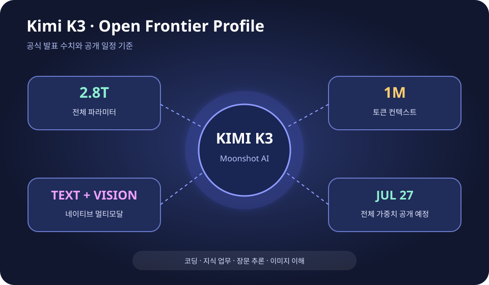

Kimi K3 공개: 2.8조 파라미터 중국 오픈 모델이 던진 질문
중국 Moonshot AI가 2.8조 개의 전체 파라미터, 100만 토큰 컨텍스트, 이미지 이해 능력을 내세운 Kimi K3를 공개했다. 회사는 7월 27일까지 전체 모델 가중치를 배포하겠다고 밝혔다. 중요한 것은 숫자의 크기만이 아니다. 미국의 최상위 폐쇄형 모델과 경쟁하는 성능을 공개 가중치와 더 낮은 가격으로 제공하려는 시도가 AI 모델 시장의 가격, 통제권, 반도체 투자 논리를 동시에 흔들고 있다.
Open Frontier Model
K3의 진짜 시험은 발표일이 아니라 가중치가 풀리는 7월 27일부터다
Moonshot의 공식 기술 글은 K3가 2.8T 규모, 네이티브 비전, 1M 토큰 컨텍스트를 지원한다고 설명한다. 다만 지금 보이는 API 성능과 실제 공개 가중치를 기업이 자체 서버에서 돌렸을 때의 성능·비용은 다를 수 있다. 공개 약속이 예정대로 이행되고 독립 평가가 반복돼야 모델의 위치가 확정된다.

Moonshot AI가 발표한 핵심 사양
공식 발표에 따르면 Kimi K3는 전체 2.8조 파라미터를 가진 대형 모델이다. 모델이 모든 파라미터를 매 요청마다 사용하는지는 별개의 문제다. 대형 Mixture-of-Experts 계열 모델은 입력에 따라 일부 전문가만 활성화해 계산량을 줄이는 방식이 일반적이다. 전체 숫자만으로 실제 속도와 운영비를 판단할 수 없는 이유다.
K3는 텍스트뿐 아니라 이미지를 기본 입력으로 처리하는 네이티브 멀티모달 모델로 소개됐다. 문서 화면, 그래프, 웹 페이지, 사진을 읽고 텍스트 추론과 연결하는 기능을 목표로 한다. Moonshot은 장시간 코딩, 지식 업무, 복잡한 추론을 주요 사용 사례로 제시했다.
컨텍스트 길이는 100만 토큰이다. 이론적으로는 매우 긴 코드 저장소, 여러 권 분량의 문서, 장기 프로젝트 기록을 한 번에 넣을 수 있다. 하지만 최대 입력 길이를 지원하는 것과 그 전체에서 필요한 정보를 정확히 찾아 추론하는 것은 다르다. 실제 장문 성능은 독립적인 needle-in-a-haystack 테스트와 업무 평가가 필요하다.
기술 글은 Kimi Delta Attention과 Attention Residuals를 핵심 구조로 제시한다. Moonshot은 긴 문맥에서 메모리와 계산 효율을 높이기 위한 설계라고 설명한다. 또한 Mooncake라는 분리형 추론 구조를 사용해 코딩 작업에서 90%가 넘는 캐시 적중률을 기록한다고 주장했다. 이 수치는 공식 API 환경 기준이며 외부 재현이 필요하다.
왜 공개 가중치가 중요한가
API만 제공되는 폐쇄형 모델은 사용자가 입력을 보내고 결과를 받지만, 모델 내부를 직접 운영하거나 수정할 수 없다. 가중치가 공개되면 기업과 연구자는 자체 데이터센터에 모델을 배포하고, 특정 업무에 맞춰 미세조정하고, 보안 환경 안에서 데이터를 처리할 수 있다.
공개 가중치는 무료 운영을 뜻하지 않는다. 2.8조 규모 모델은 저장 공간, 고대역폭 메모리, 여러 GPU 간 통신, 냉각과 전력을 요구한다. 대부분의 개인과 중소기업은 전체 모델을 직접 돌리기 어렵고, 양자화·증류 버전이나 클라우드 호스팅을 이용하게 될 가능성이 높다.
그래도 선택권은 달라진다. 한 회사 API의 가격과 정책에 완전히 묶이지 않고, 여러 호스팅 업체를 비교하거나 내부 규정에 맞는 배포 방식을 고를 수 있다. 모델 제공사가 가격을 올리거나 특정 기능을 제한할 때 전환할 수 있는 여지가 생긴다. 오픈 모델이 시장 가격에 압력을 주는 핵심 이유다.
라이선스도 반드시 확인해야 한다. “오픈 웨이트”와 “오픈소스”는 같은 말이 아니다. 코드와 가중치를 받을 수 있어도 상업 이용, 재배포, 경쟁 모델 학습, 특정 국가나 산업 사용에 조건이 붙을 수 있다. 7월 27일 공개 파일과 함께 제공될 최종 라이선스가 기업 도입의 중요한 기준이 된다.
벤치마크에서 무엇을 보여줬나
Axios는 K3가 일부 코딩과 텍스트 평가에서 미국의 최상위 모델을 앞섰다고 보도했다. 특히 익명 사용자 평가가 반영되는 Arena 계열 테스트와 프런트엔드 코딩 작업에서 강한 결과가 시장의 주목을 끌었다. Artificial Analysis도 K3를 프런티어급 모델군에 포함해 비교했다.
하지만 하나의 순위로 “세계 최고”를 선언하는 것은 위험하다. 코딩 평가는 새 프로젝트 생성과 기존 저장소 수정이 다르고, 텍스트 평가는 영어와 중국어, 사실 검색과 창의적 글쓰기에서 결과가 달라진다. 도구 사용, 장기 에이전트 작업, 안전성, 응답 속도까지 포함하면 순위는 다시 바뀐다.
가격 비교도 같은 주의가 필요하다. API 토큰 가격이 낮아도 답을 얻기 위해 더 많은 토큰을 쓰거나 재시도가 늘면 총비용이 커질 수 있다. 반대로 긴 문맥 캐시가 잘 작동하면 반복 코딩 작업의 비용이 크게 줄 수 있다. 기업은 공개된 단가보다 자기 업무의 완료 비용을 측정해야 한다.
미국 기술주가 반응한 이유
AP는 Kimi K3 공개가 반도체와 AI 관련주의 불안과 겹쳤다고 전했다. 강력한 중국 공개 모델이 더 낮은 비용으로 등장하면, 미국 기업이 막대한 데이터센터 투자에서 얻을 초과이익이 줄어들 수 있다는 우려가 시장에 반영됐다.
이 반응을 “오픈 모델이 GPU 수요를 없앤다”로 읽으면 과도하다. K3 자체가 매우 큰 모델이고, 실제 서비스에는 여전히 대규모 가속기가 필요하다. 오픈 모델은 컴퓨트 수요를 없애기보다 수요가 어느 클라우드, 어느 칩, 어느 지역으로 향하는지 바꾼다.
더 현실적인 압력은 모델 가격이다. 비슷한 성능을 더 싼 API나 자체 호스팅으로 쓸 수 있다면 OpenAI, Anthropic, Google은 높은 가격을 유지하기 어렵다. 반면 클라우드와 반도체 업체에는 더 많은 기업이 AI를 도입하면서 전체 추론량이 늘어나는 긍정적 효과도 있다.
중국 AI 산업에는 어떤 의미인가
DeepSeek 이후 중국 AI 기업은 “미국 모델을 따라가는 저가 대안”이라는 위치에서 벗어나려 하고 있다. Kimi K3는 규모, 멀티모달, 장문 코딩, 공개 가중치를 동시에 내세워 기술 방향을 선도하려는 시도다. WAIC를 앞둔 시점의 공개라는 점도 중국의 AI 산업 메시지와 맞물린다.
Moonshot AI는 Alibaba나 Baidu처럼 거대한 플랫폼을 가진 회사가 아니다. 따라서 Kimi가 살아남으려면 모델 성능 외에 개발자 생태계, API 안정성, 기업 계약, 해외 접근성을 확보해야 한다. 공개 가중치는 플랫폼 열세를 개발자 확산으로 보완하는 전략이 될 수 있다.
동시에 미국의 첨단 칩 수출 규제 속에서 이런 모델이 나왔다는 사실은 효율화 경쟁을 자극한다. 중국 기업은 제한된 고성능 GPU를 더 효율적으로 쓰고, 국산 가속기와 소프트웨어를 연결해야 한다. K3의 실제 운영 구조가 공개되면 중국 컴퓨트 생태계의 수준을 판단하는 자료가 될 것이다.
한국 개발자와 기업이 확인할 것
한국어 품질은 별도 평가가 필요하다. 영어·중국어 벤치마크에서 강하더라도 한국어 존댓말, 법률·의료 용어, 국내 문서 형식, 검색 근거 제시에서 같은 수준을 보장하지 않는다. 대표적인 사내 문서와 실제 고객 질문으로 평가 세트를 만들어 비교해야 한다.
데이터 보안과 공급망도 중요하다. 자체 호스팅이 가능하면 민감 데이터를 외부 API로 보내지 않을 수 있지만, 모델 파일과 추론 프레임워크의 출처, 업데이트 방식, 취약점 대응을 직접 관리해야 한다. 중국 모델 사용에 대한 조직 내부 정책과 규제 요구도 확인해야 한다.
가장 좋은 접근은 전면 교체가 아니라 업무별 시험이다. 긴 문서 분석, 코드 생성, 이미지가 포함된 보고서, 한국어 고객 대응 등 몇 가지 실제 작업을 정하고 품질·속도·비용·보안을 함께 측정하면 K3가 어느 영역에서 가치가 있는지 드러난다.
내가 보는 핵심
Kimi K3의 의미는 “중국이 미국을 완전히 이겼다”는 한 문장에 있지 않다. 최고급 모델을 폐쇄형 API로만 제공하던 시장에, 프런티어에 가까운 성능과 공개 가중치를 동시에 요구하는 압력이 커졌다는 데 있다.
7월 27일 가중치 공개, 최종 라이선스, 독립적인 장문·코딩·한국어 평가가 이어져야 진짜 실력이 보인다. 그 검증을 통과한다면 K3는 하나의 인기 모델을 넘어 기업이 AI 공급자를 고르는 기준 자체를 바꾸는 사건이 될 수 있다.
Comments
댓글